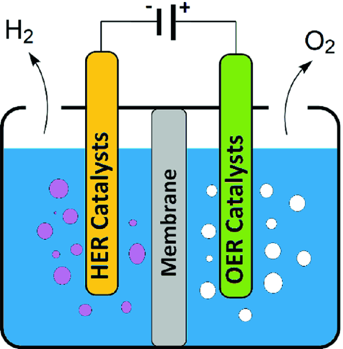
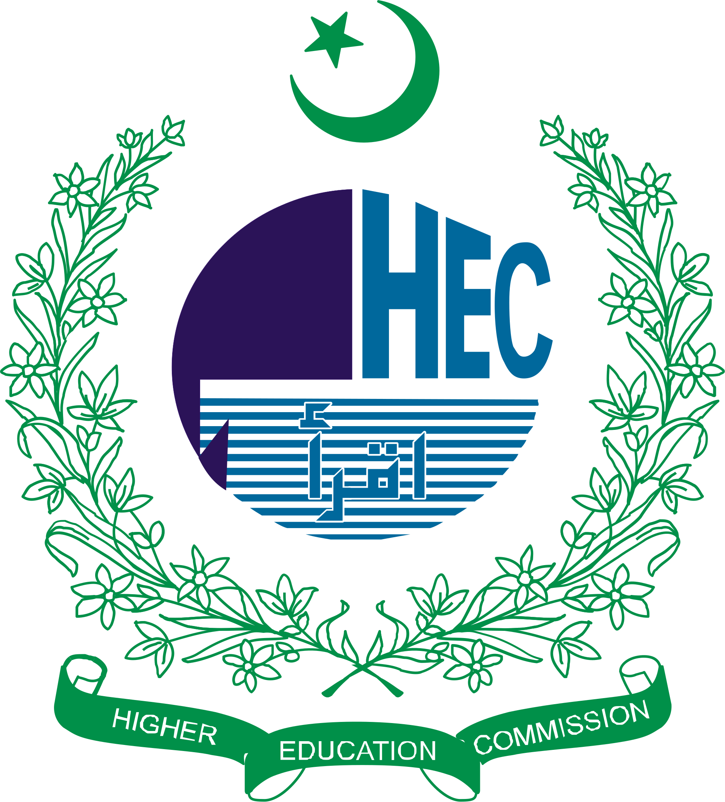

Research Areas
My research takes an interdisciplinary approach to experimental condensed matter physics and energy materials systems—integrating advanced synthesis parameters with state-of-the-art structural and chemical characterization. The goal is to develop and optimize high-efficiency material classes that enhance performance boundaries to solve critical global energy and sustainability challenges.
Advanced Thermoelectric Systems
• Doping Engineering • Waste Heat Recovery • Carrier Transport- Investigating high-performance Mg₃(Sb,Bi)₂-based compounds tailored specifically for low-grade waste heat recovery and power generation applications.
- Optimizing phase purity through transition-metal doping strategies.
- Engineering atomic defects and point-defect scattering mechanisms to decouple electrical and thermal transport properties.
- Applications: solid-state power generation, waste heat harvesting, thermal management for electronics and data centers, and distributed energy systems.
High-Tc Superconducting Materials
• Advanced TEM • Microstructural Characterization • Defect Mapping- Characterizing microstructural defects and dislocations in Hg-1223 superconducting single crystals.
- Utilizing high-resolution Transmission Electron Microscopy (TEM) and Selected Area Electron Diffraction (SAED) to determine crystal structure, lattice symmetry, and defect distributions.
- Correlating nanoscale phase composition variances with macroscopic critical current density and flux pinning mechanisms.
- Applications: Resistance-free power delivery grids, high-field magnetic machinery, fusion energy systems and quantum computing technologies.

Advanced Electrocatalysis for Green Hydrogen
• Green Hydrogen • Water-Splitting • Fuel Cells- Synthesizing low-cost, earth-abundant catalysts optimized for high-efficiency electrochemical water splitting.
- Evaluating oxygen evolution reaction (OER) enhancements through compositional and defect engineering strategies.
- Applications: Industrial water electrolyzers, sustainable hydrogen fuel production, Fuel Cells, and carbon reduction technologies.
Funding and Collaborations
Selected institutions and organizations that have supported or contributed to my research activities through funding, facilities, collaborations, and academic partnerships. Additional information regarding awards and competitive funding can be found on the Awards & Honors page.
